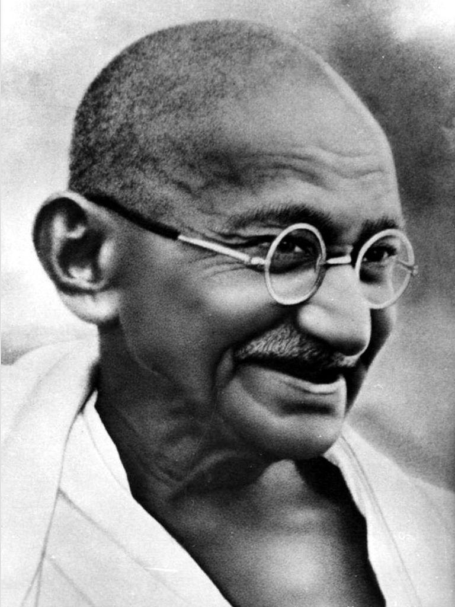
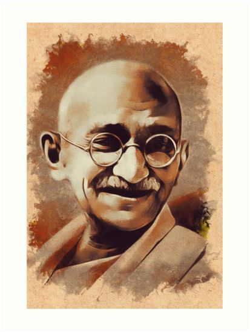

About Gandhiji
Mahatma Gandhi was the leader of the Indian independence movement against British rule. He is renowned for his philosophy of nonviolent resistance and has inspired civil rights movements across the world.
Timeline of Achievements
- 1869: Born in Porbandar, India
- 1915: Returned to India from South Africa and joined Indian National Congress
- 1930: Led the Salt March, a nonviolent protest against British salt tax
- 1942: Launched the Quit India Movement
- 1947: India gained independence
- 1948: Assassinated in New Delhi, India
Images of Gandhiji


Quotes
"Be the change that you wish to see in the world." - Mahatma Gandhi
"The best way to find yourself is to lose yourself in the service of others." - Mahatma Gandhi
Testimonials
“Gandhi's vision and nonviolent resistance methods continue to inspire millions worldwide.” - Historian A
“His legacy is a testament to the power of peaceful protest and the enduring strength of human spirit.” - Historian B